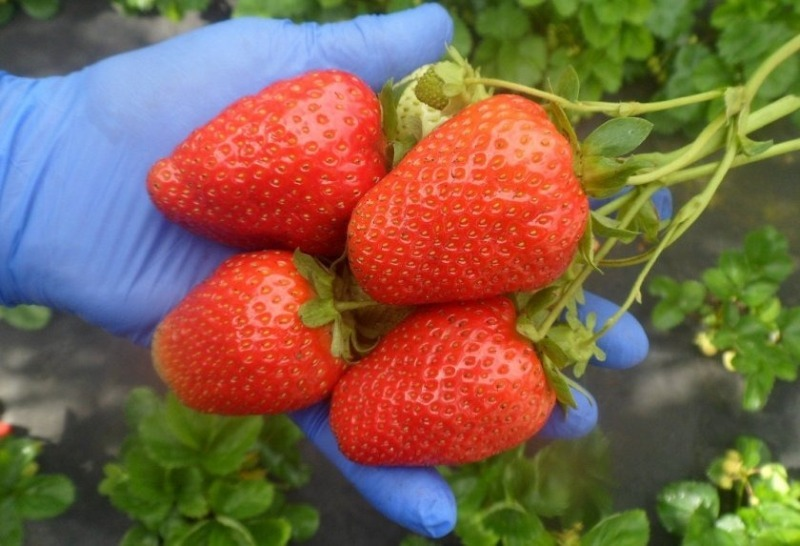
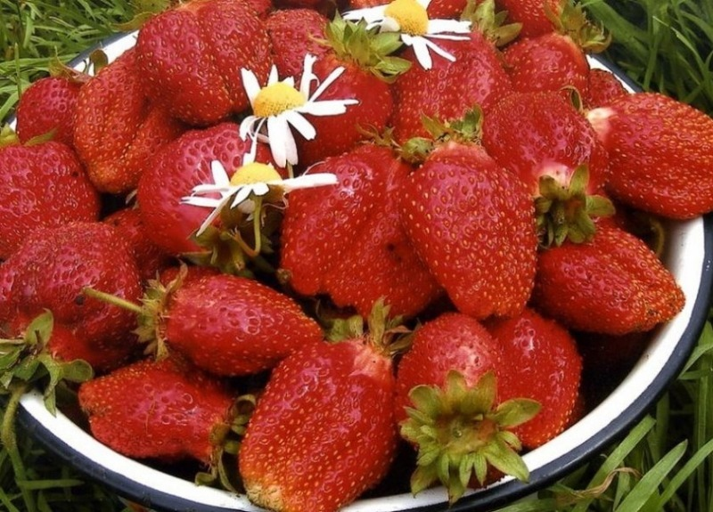
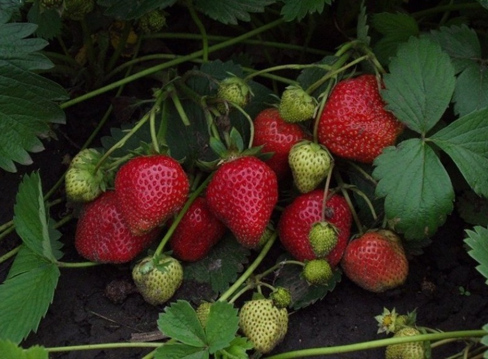
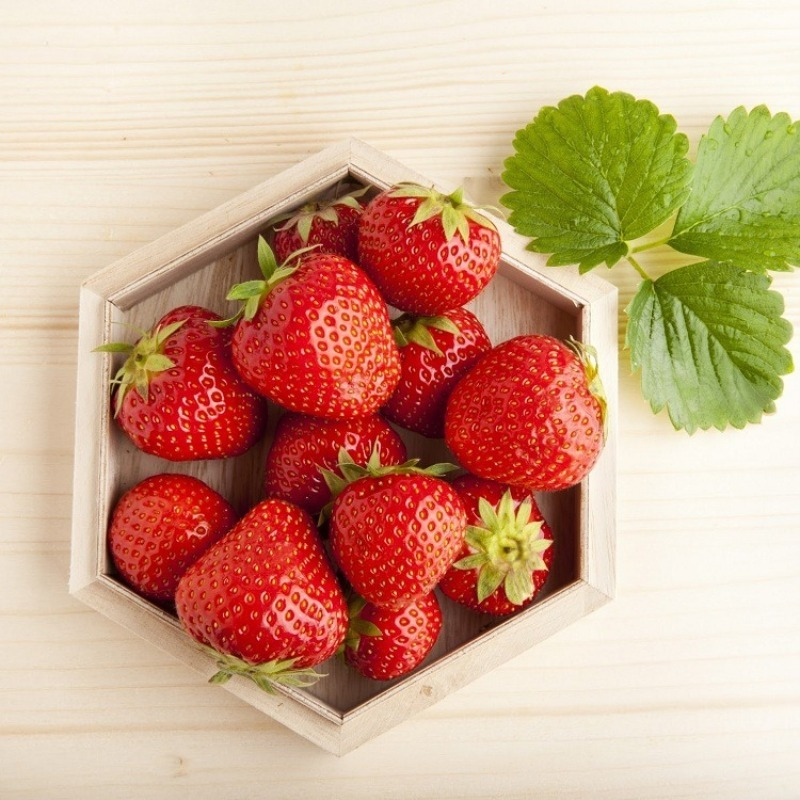
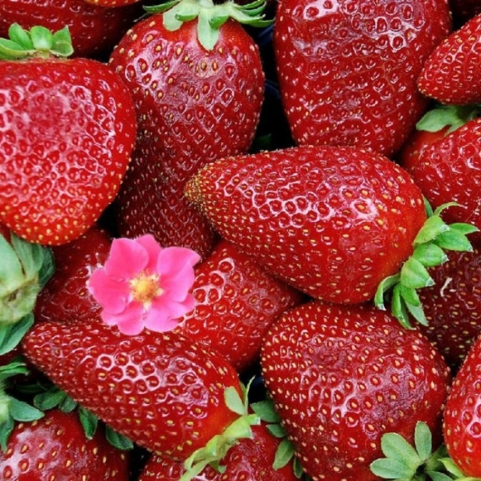

-

Суприм
Сорт может выращиваться просто в больших горшках в комнатных условиях, а в теплое время года – на балконе.
Его главные достоинства: самоопыляемость, отсутствие усов, возможность расти в тени, дружное и обильное плодоношение.
-

Женева
Клубника Женева относится к ремонтантным сортам, поэтому урожай с нее можно собирать несколько раз с начала лета до поздней осени.
Именно по этой причине вид может выращиваться в комнатных условиях. Преимущества сорта: дружное плодоношение, высокая урожайность, неприхотливость.
-

Королева Елизаветаа
Популярный у дачников сорт народной селекции может выращиваться не только на грядке, но и на балконе, а в зимнее время – в комнате.
Усов он дает мало. Сильные, раскидистые, невысокие кустики цветут практически без перерыва с мая по октябрь.
Особенности этого сорта клубники: повышенная ремонтантность, нечувствительность к световому дню.
Цветет и плодоносит она без перерывов каждые две недели. Ягоды блестящие, ярко-красные, плотные и сладкие.
-

Домашний деликатес
Сорт ампельный, что придает ему еще большую декоративность при выращивании дома. На балконе он отлично себя чувствует в подвесных контейнерах и кашпо.
-

Тристан
Еще один ампельный ремонтантный сорт, с успехом выращиваемый в домашних условиях. К его отличительным качествам можно отнести то, что он образует не белые, а малиновые цветы.
Цветет сорт рано, после чего крупные цветки превращаются в сочные сладкие ягоды. С одного растения можно снять до 100 плодов.